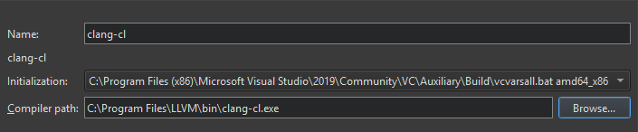
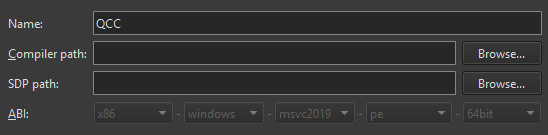

Compilers
To build an application using GCC, MinGW, Clang, or QCC, specify the path to the directory where the compiler is located and select the application binary interface (ABI) version from the list of available versions. You can also create a custom ABI definition. For QCC, also specify the path to the QNX Software Development Platform (SDP) in the SPD path field.
To enable Microsoft Visual C++ Compilers (MSVC) and clang-cl to find system headers, libraries, and the linker, Qt Creator executes them inside a command prompt where you set up the environment using vcvarsall.bat. For these compilers, you also specify the path to the script that sets up the command prompt in the Initialization field.
You specify the compiler to use for each kit in Preferences > Kits.
To set compiler preferences according to the compiler type, select Preferences > Kits > Compilers:
- In the Name field, enter a name for the compiler to identify it in Qt Creator.

Adding a clang-cl compiler.
- In the Initialization field, select the
vcvarsall.batfile for setting up the command prompt to use. - In the Compiler path field, enter the path to the directory where the compiler is located.
- In the Platform codegen flags field, check the flags passed to the compiler that specify the architecture on the target platform.

Adding a Clang compiler.
- When building with Qbs: In the Platform linker flags field, check the flags passed to the linker that specify the architecture on the target platform.
- In the Parent toolchain field, select a MinGW compiler, which is needed because Clang does not have its own standard library.
- In the SPD path field, specify the path to the QNX Software Development Platform (SDP).

Adding a QCC compiler.
- In the ABI field, enter an identifier for the target architecture. This is used to warn about ABI mismatches within the kits.
- In the Target triple field, specify the GCC target architecture. If code model services fail because Clang does not understand the target architecture, select Override for code model.
Target triple field.
See also Add compilers, Add custom compilers, Add Nim compilers, and Supported Platforms.